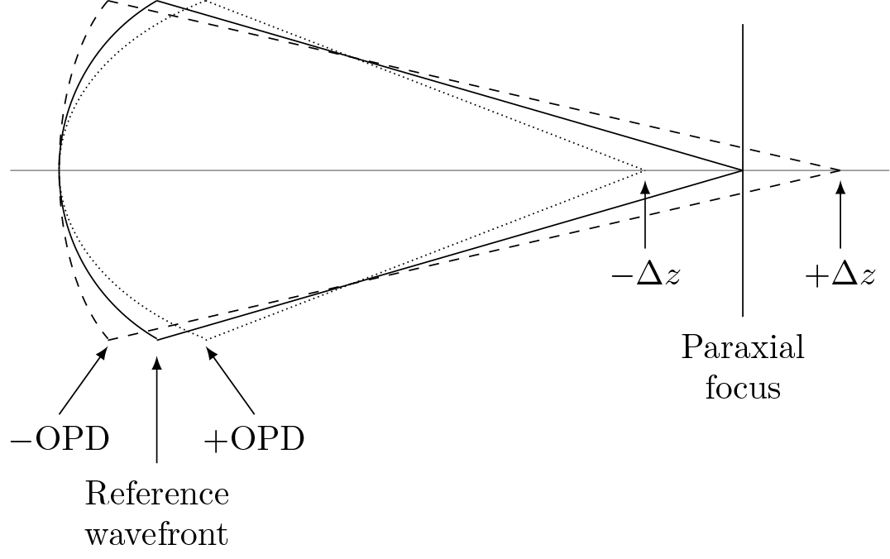
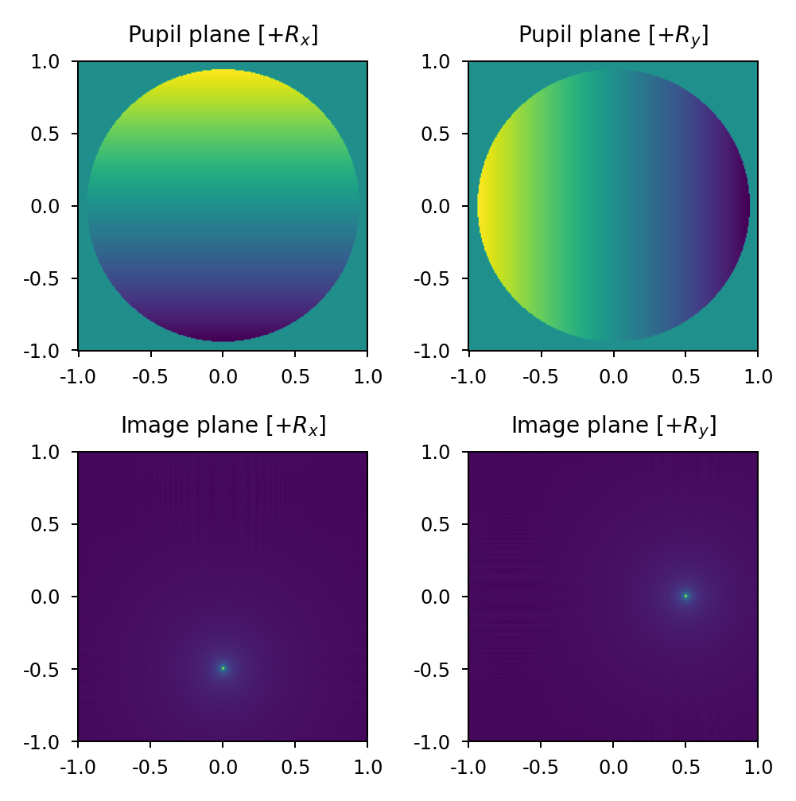
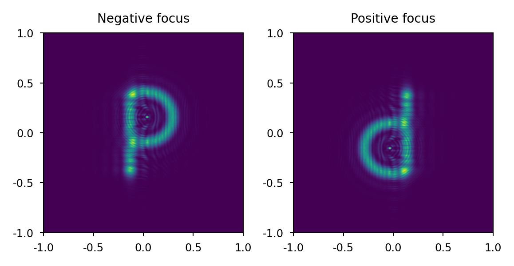
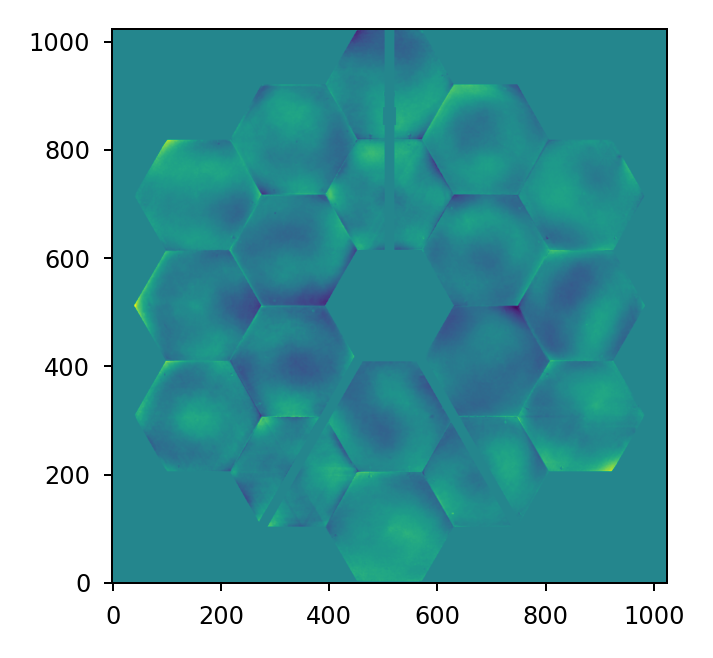
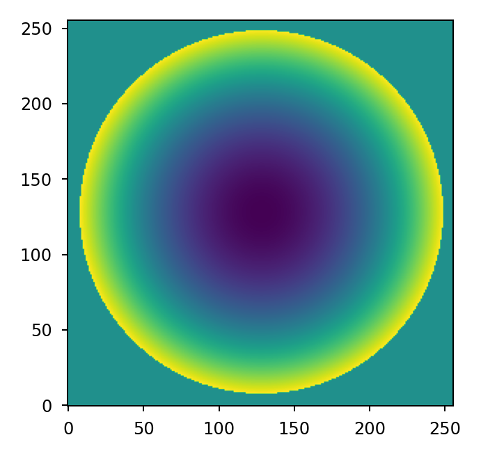
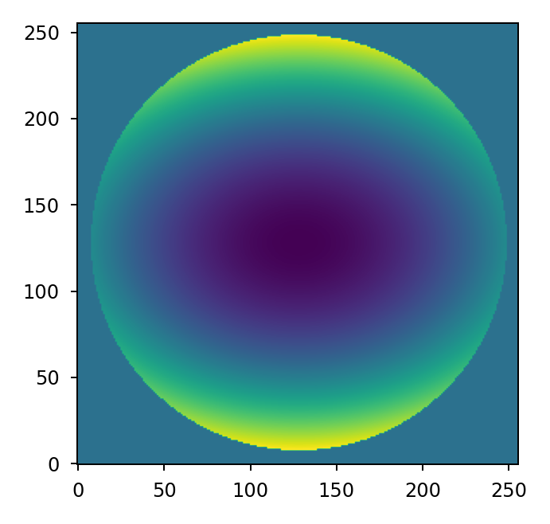
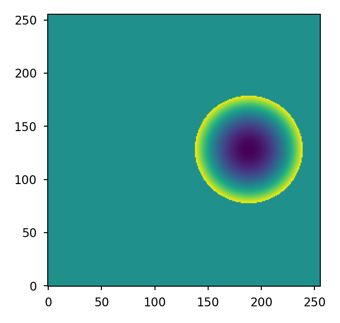
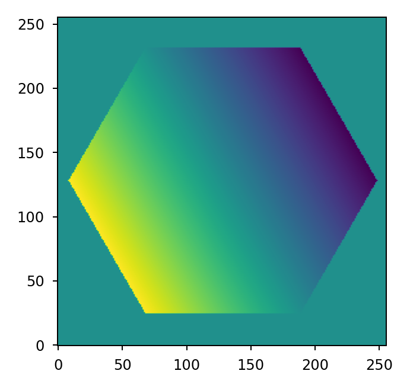
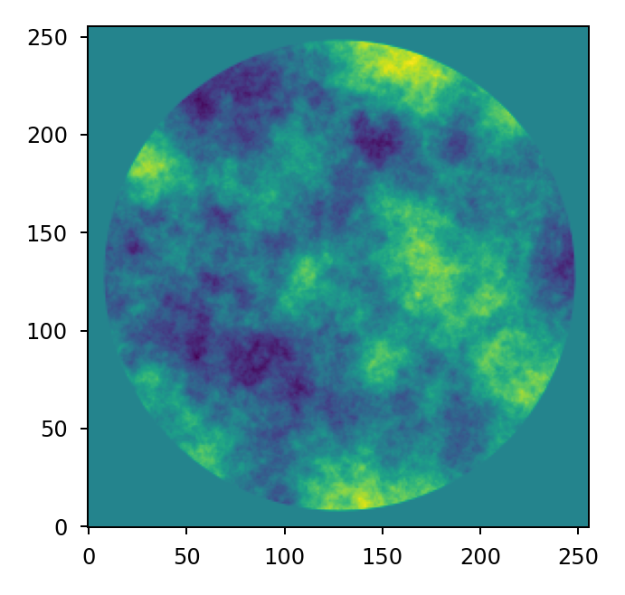

Representing wavefront error#
Wavefront error is represented in a Plane by specifying its
phase attribute. For static errors, a simple wavefront error map is
sufficient. For more complicated errors that are random or time-varying in nature, a
more dynamic and/or state-based approach is required.
Any Python type that is array-like can be provided and will be converted by Lentil to a Numpy array.
Note
For Pupil planes, the phase attribute represents the optical
path difference (OPD) relative to the pupil’s reference sphere.
Sign conventions#
Lentil adopts the convention that a positive phase or OPD leads an ideal reference wavefront and a negative phase or OPD lags an ideal reference wavefront. From the figure below, a positive phase or OPD produces a negative aberration (focus, in this case) while a negative phase or OPD produces a positive aberration.

Tip/tilt#
A positive x-tilt rotates the yz plane counter-clockwise about the x-axis resulting in vertical image plane motion in the negative y direction. A positive y-tilt rotates the xz plane counter-clockwise about the y-axis resulting in horizontal image plane motion in the positive x direction.

Focus#
A positive focus has the effect of shifting the image plane in front of focus while a negative focus has the effect of shifting the image plane behind focus. We can test this by observing +/- defocused point spread functions of an imaging system with an asymmetric exit pupil (for example, in the shape of the letter P). We expect the negative focus image to have the same orientation as the exit pupil (consistent with being observed before focus) and the positive focus image to be flipped about both axes relative to the exit pupil (consistent with being observed after passing through focus).

Static Errors#
Lentil can use static error maps from a multitude of formats, provided you can get the data into Python. Common file formats are .npy or .fits files. Here we load an .npy file containing the JWST NITCam static wavefront error:
>>> import numpy as np
>>> import lentil
>>> phase = np.load('path/to/nircam.npy')
>>> pupil = lentil.Pupil(focal_length=119.77, pixelscale=6.6035/1024, phase=phase)

Zernike Polynomials#
Lentil provides methods for creating, combining, fitting, and removing Zernike polynomials.
Note
Lentil uses the Noll indexing scheme for defining Zernike polynomials [1].
Wavefront error maps are easily computed using either the zernike() or
zernike_compose() functions. For example, we can represent 100 nm of focus over a
circular aperture with zernike():
>>> import matplotlib.pyplot as plt
>>> import lentil
>>> mask = lentil.circlemask((256,256), 120)
>>> z4 = 100e-9 * lentil.zernike(mask, index=4)
>>> plt.imshow(z4, origin='lower')

Any combination of Zernike polynomials can be combined by providing a list of coefficients
to the zernike_compose() function. For example, we can represent 200 nm of
focus and -100 nm of astigmatism as:
>>> import matplotlib.pyplot as plt
>>> import lentil
>>> mask = lentil.circlemask((256,256), 120)
>>> coefficients = [0, 0, 0, 200e-9, 0, -100e-9]
>>> z = lentil.zernike_compose(mask, coefficients)
>>> plt.imshow(z, origin='lower')

Note that the coefficients list is ordered according to the Noll indexing scheme so the first entry in the list represents piston, the second represents, tilt, and so on.
For models requiring many random trials, it may make more sense to pre-compute the
Zernike modes once and accumulate the error map for each new state. We can do this by
creating a vectorized basis set using zernike_basis() and accumulating
each independent term using Numpy’s einsum function.
Note that in this case we are only computing the Zernike modes we intend to use (Noll
indices 4 and 6) so now the first entry in coefficients corresponds to focus and the
second corresponds to astigmatism.
>>> import matplotlib.pyplot as plt
>>> import numpy as np
>>> import lentil
>>> mask = lentil.circlemask((256,256), 120)
>>> coefficients = [200e-9, -100e-9]
>>> basis = lentil.zernike_basis(mask, modes=(4,6))
>>> z = np.einsum('ijk,i->jk', basis, coefficients)
>>> plt.imshow(z, origin='lower')

If you don’t love einsum, it’s possible to achieve the same result with Numpy’s
tensordot:
>>> import matplotlib.pyplot as plt
>>> import numpy as np
>>> import lentil
>>> mask = lentil.circlemask((256,256), 120)
>>> coefficients = [200e-9, -100e-9]
>>> basis = lentil.zernike_basis(mask, modes=(4,6))
>>> z = np.tensordot(basis, coefficients, axes=(0,0))
>>> plt.imshow(z, origin='lower')

Normalization#
Each of Lentil’s Zernike functions accepts a normalize parameter. If normalize
is False (the default), the raw Zernike mode is returned. Each mode will approximately
span [-1 1] although this shouldn’t be relied upon because of the discrete sampling of
the result. If normalize is true, the Zernike mode will be normalized so that its
standard deviation equals 1.
Normalization becomes important when trying to achieve a specific error magnitude,
whether it be in terms of RMS or peak to valley. To acihieve a specific error in terms
of RMS, Zernike modes should be computed with normalize=True before multiplying by
the error magnitude:
>>> import numpy as np
>>> import lentil
>>> mask = lentil.circlemask((256,256), 128)
>>> z4 = 100e-9 * lentil.zernike(mask, mode=4, normalize=True)
>>> np.std(z4[np.nonzero(z4)])
9.986295346152438e-08
To achieve a specific error in terms of peak to valley, Zernike modes should be computed and normalized separately. The separate normalization step should be performed to ensure the discretely sampled mode spans [-0.5 0.5] before multiplying by the error magnitude:
>>> import numpy as np
>>> import lentil
>>> mask = lentil.circlemask((256,256), 128)
>>> z4 = lentil.zernike(mask, mode=4)
>>> z4 /= np.max(z4) - np.min(z4)
>>> z4 *= 100e-9
>>> np.max(z4) - np.min(z4)
1e-07
Defining custom coordinates#
By default, all of Lentil’s Zernike functions place the center of the coordinate system
at the centroid of the supplied mask with its axes aligned with Lentil’s
Coordinate system. This works as expected for the vast majority of
needs, but in some cases it may be desirable to manually define the coordinate system.
This is accomplished by using zernike_coordinates() to compute rho and
theta, and providing these definitions to the appropriate Zernike function. For
example, if we have an off-centered sub-aperture but wish to compute focus relative to
the center of the defined array:
>>> import matplotlib.pyplot as plt
>>> import lentil
>>> mask = lentil.circlemask((256,256), radius=50, shift=(0,60))
>>> rho, theta = lentil.zernike_coordinates(mask, shift=(0,60))
>>> z4 = lentil.zernike(mask, 4, rho=rho, theta=theta)
>>> plt.imshow(z4, origin='lower')

If we wish to align a tilt mode with one side of a hexagon:
>>> import matplotlib.pyplot as plt
>>> import lentil
>>> mask = lentil.hexagon((256,256), radius=120)
>>> rho, theta = lentil.zernike_coordinates(mask, shift=(0,0), rotate=30)
>>> z2 = lentil.zernike(mask, 2, rho=rho, theta=theta)
>>> plt.imshow(z2, origin='lower')

Sensitivity Matrices#
The effects of optical element rigid body perturbations and surface figure errors in the exit pupil of an optical system are commonly captured using linear sensitivity matrices. These linearized models can be used in place of a full ray-tracing model for representing small perturbations and errors. In general, a linear wavefront error model has the form:
where \(\mathbf{\theta}\) is the wavefront error map, \(S\) is the sensitivity matrix, and \(\Delta\mathbf{x}\) is a vector of perturbations relative to the system state about which linearization occurred.
The \(\mathbf{S}\) matrix will have either two or three dimensions. For a three- dimensional sensitivity matrix, the wavefront error map is computed by multiplying \(\mathbf{S}\) by the \(\Delta\mathbf{x}\) vector and summing along the first dimension:
>>> theta = np.einsum('ijk,i->jk', S, dx)
For a two-dimensional sensitivity matrix, each mode is assumed to have been unraveled into a vector. The wavefront error is computed by taking the dot product of \(\mathbf{S}\) and \(\Delta\mathbf{x}\) and reshaping the resulting vector into a two-dimensional error map. For a sensitivity matrix representing a 256 x 256 pixel wavefront map:
>>> theta = np.dot(S, dx)
>>> theta.reshape((256,256))
Surface roughness#
Random optical surface errors that result from the manufacturing and figuring process
are typically small in magnitude and are commonly expressed through their power
spectral density (PSD). The power_spectrum() function computes random
wavefront error map given a PSD:
>>> import matplotlib.pyplot as plt
>>> import lentil
>>> mask = lentil.circle((256, 256), 120)
>>> w = lentil.power_spectrum(mask, pixelscale=1/120, rms=25e-9, half_power_freq=8,
... exp=3)
>>> plt.imshow(w, origin='lower')
